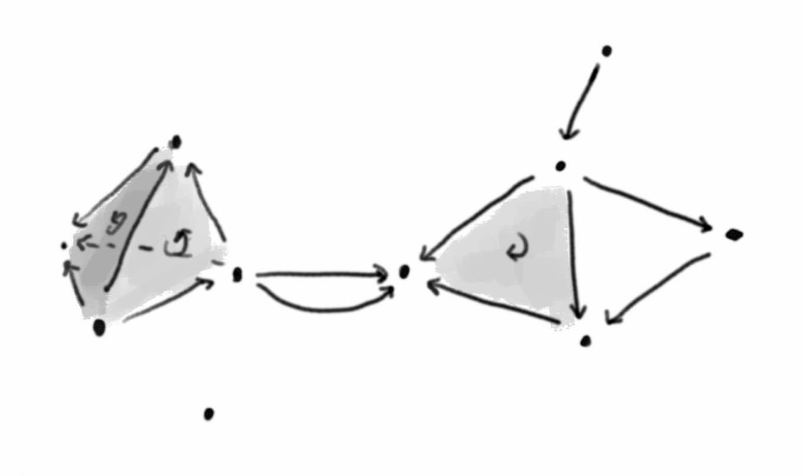

A category describes a collection of objects with composable morphisms between them. In a 2-category you also have 2-morphisms between morphisms with matching domain and codomain. For example there is a 2-category \(\text{Cat}\) with objects given by (small) categories, 1-morphisms given by functors between categories, and 2-morphisms given by natural transformations between functors. Continuing this pattern gives the idea of an \(n\)-category, where you have objects, 1-morphisms, 2-morphisms, and so on up to \(n\)-morphisms. The ultimate such structure is an \(\infty\)-category, with a never ending sequence of morphisms between morphisms between … between morphisms.
In a weak \(n\)- or \(\infty\)-category, associativity and identity laws only hold up to (coherent) isomorphism. In fact we don’t even need to require composition of morphisms to be uniquely defined! We only ask that all possible composites are uniquely isomorphic (where uniquely is interpreted in an appropriate higher categorical sense).
Weak higher categories are generally hard to understand, or even define correctly, and are currently an area of active research. However an especially well-behaved special case is that of a weak \((\infty, 1)\)-category, where all \(k\)-morphisms for \(k > 1\) are equivalences. Quasi-categories are one of the earliest and most important ways to formalise the idea of a weak \((\infty, 1)\)-category. The definition of a quasi-category turns out to be less horrendously complicated than you might expect! The key is to understand simplicial sets, which are a kind of combinatorial approach to shape. Then a quasi-category is a simplicial set satisfying a condition that asks for certain “compositions of morphisms” to exist. We’ll start with a quick overview of simplicial sets, emphasising geometric intuition, before explaining the precise definition of a quasi-category.
Simplicial sets
The idea of a simplicial set is to describe a shape by building it up out of simplices – points, lines, triangles, and so on. Moreover each simplex should come with an ordering on its vertices, so for example edges have a direction and triangles have an orientation.
